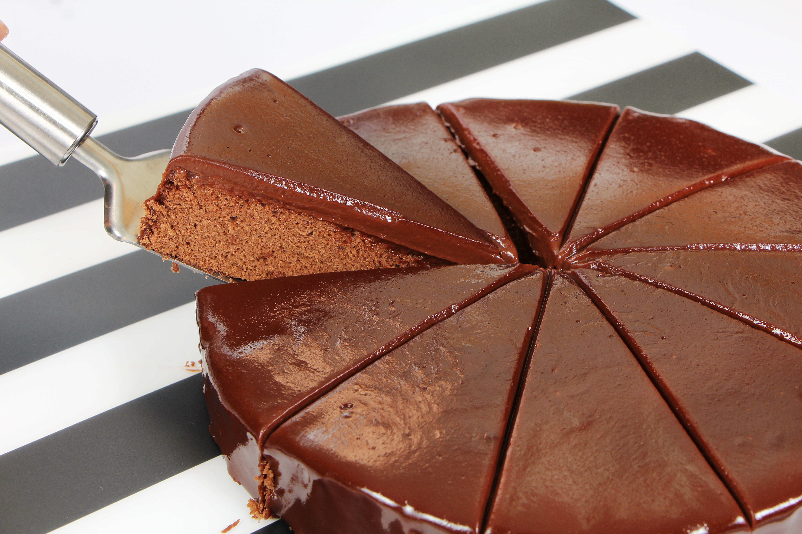

Bolo de Chocolate
| Dificuldade | Porções | Tempo de Preparo |
|---|---|---|
| Fácil | 10 Pedaços | 60 Minutos |

Ingredientes
- 3 Ovos
- 1 e 1/2 (chá) de açúcar
- 2 Xicaras de Farinha de Trigo
- 1 Xícara de chocolate em pó
- 1/2 Xícara de Óleo
- 1 Colher de Fermento em Pó
- 1 Pitada de Sal
- 1 Xícara de Água Quente
Modo de Preparo
- Bata no Liquidificador os ovos, o açúcar, óleo, achocolatado e farinha de trigo (aos poucos).
- Despeje a massa em uma tigela e adicione a água quente, o sal e o fermento, misturando bem.
- Despeje a massa em uma forma untada e asse em forno médio-alto(200) preaquecido por 40 Minutos.
- Desenforme ainda quente.